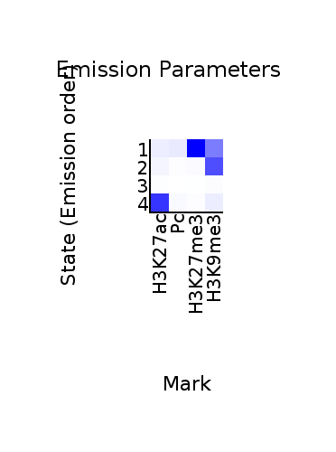
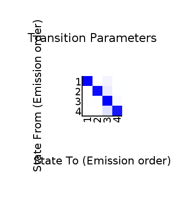
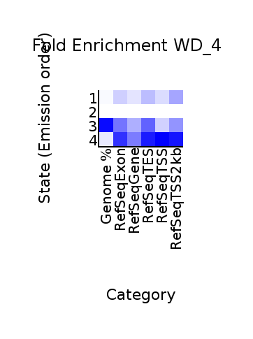
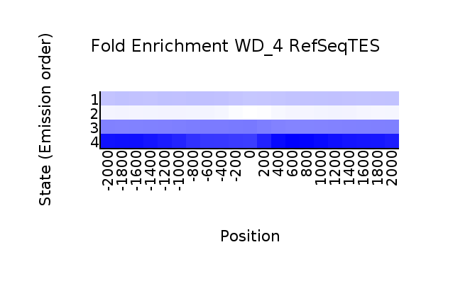
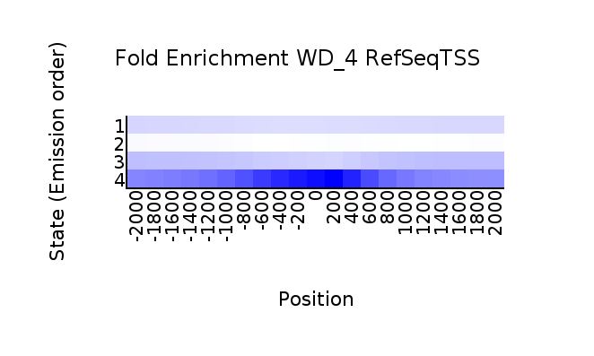

<center><h1>ChromHMM Report</h1></center>
Input Directory: binarizedBams_at_200bp<br>
Output Directory: model_at_200bp_with_4_states<br>
Number of States: 4<br>
Assembly: dm6<br>
Full ChromHMM command: LearnModel -b 200 binarizedBams_at_200bp model_at_200bp_with_4_states 4 dm6
<h1>Model Parameters</h1>
<br>
<li><a href="emissions_4.svg">Emission Parameter SVG File</a><br>
<li><a href="emissions_4.txt">Emission Parameter Tab-Delimited Text File</a><br>
<br>
<li><a href="transitions_4.svg">Transition Parameter SVG File</a><br>
<li><a href="transitions_4.txt">Transition Parameter Tab-Delimited Text File</a><br><br>
<li><a href="model_4.txt">All Model Parameters Tab-Delimited Text File</a> <br>
<h1>Genome Segmentation Files</h1>
<li><a href="WD_4_segments.bed">WD_4 Segmentation File (Four Column Bed File)</a><br>
<br>
Custom Tracks for loading into the <a href="http://genome.ucsc.edu">UCSC Genome Browser</a>:<br>
<li><a href=WD_4_dense.bed>WD_4 Browser Custom Track Dense File</a> <br>
<li><a href=WD_4_expanded.bed>WD_4 Browser Custom Track Expanded File</a><br>
<h1>State Enrichments</h1>
<h2>WD_4 Enrichments</h2>
 <br>
<li><a href="WD_4_overlap.svg">WD_4 Overlap Enrichment SVG File</a><br>
<li><a href="WD_4_overlap.txt">WD_4 Overlap Enrichment Tab-Delimited Text File</a><br>
 <br>
<li><a href="WD_4_RefSeqTES_neighborhood.svg">WD_4_RefSeqTES_neighborhood Enrichment SVG File</a><br>
<li><a href="WD_4_RefSeqTES_neighborhood.txt">WD_4_RefSeqTES_neighborhood Enrichment Tab-Delimited Text File</a><br>
 <br>
<li><a href="WD_4_RefSeqTSS_neighborhood.svg">WD_4_RefSeqTSS_neighborhood Enrichment SVG File</a><br>
<li><a href="WD_4_RefSeqTSS_neighborhood.txt">WD_4_RefSeqTSS_neighborhood Enrichment Tab-Delimited Text File</a><br>
